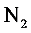
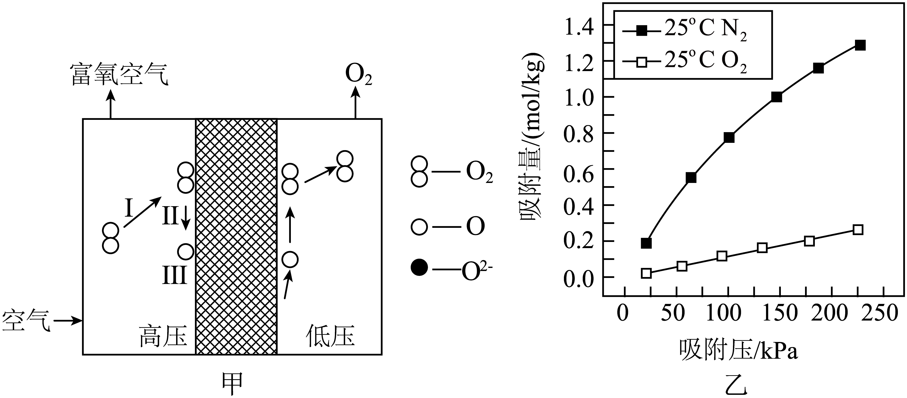

2024年北京市中考化学真题 · 科普阅读 第29题
29. 阅读下面科普短文。
生活中有时需要用到高浓度 ，供氧方式主要有氧气瓶、氧气袋和制氧机…
，供氧方式主要有氧气瓶、氧气袋和制氧机…
氧气瓶和氧气袋中的一般用深冷法制得，该方法利用物质的沸点差异，从空气中分离出。
制氧机有膜分离、变压吸附等制氧方式。膜分离制氧用到的膜材料有陶瓷、聚苯胺等，其中混合导电陶瓷分离膜的工作原理示意如图甲。变压吸附制氧常用的吸附剂是沸石分子筛。科研人员在一定条件下分别将

、通过某种沸石分子筛，测定其对、的吸附情况、结果如图乙（纵坐标数值越大，代表吸附量越大）。吸氧对于缺氧人群有一定作用，但健康人短期内高流量吸氧会对机体造成不良影响，因此不能盲目吸氧。

（原文作者刘应书、汪波等，有删改）
依据文章内容回答下列问题。
（1）供氧方式主要有______（写出一种即可）。
（2）深冷法制氧利用了物质 ______（填“物理性质”或“化学性质”）差异。
______（填“物理性质”或“化学性质”）差异。
（3）图甲中，表示氧分子变成氧原子的是______（填“Ⅰ”“Ⅱ”或“Ⅲ”）。
（4）由图乙可知，25℃时吸附压越大越有利于分离和，证据是______。
（5）判断下列说法是否正确（填“对”或“错”）。
①氧气瓶中的一般用深冷法制得。______
②健康人不能盲目吸氧。______
【生产实际分析】